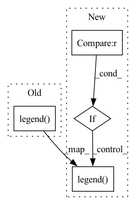

Pattern ID :38607
Before Change
ax.plot(epochs, val, color=[0.96707953, 0.46268314, 0.45772886],
label="Validation ")
ax.legend()
ax.plot(epochs, val, color=[0.13778617, 0.06228198, 0.33547859],
label="Training ")
ax.legend()After Change
ax = axis[idx]
if val_data is not None :
val_key, val_loss = val_data
ax.plot(epochs, val_loss, color=[0.96707953, 0.46268314, 0.45772886],
label="Validation ")
ax.legend()
ax.plot(epochs, loss, color=[0.13778617, 0.06228198, 0.33547859],
label="Training ")
ax.legend()In pattern: SUPERPATTERN
Frequency: 4
Non-data size: 4
Instances Fragment ID: 110424540
Project Name: atrcheema/ai4water
Commit Name: 40aa950e83a5bcc462847e18503cac88ac6ed71c
Time: 2022-10-22
Author: ather_abbas786@yahoo.com
File Name: ai4water/postprocessing/utils.py
M Class Name: LossCurve
N Class Name: LossCurve
M Method Name: plot_loss(4)
N Method Name: plot_loss(4)
M Parent Class: Plot
N Parent Class: Plot
M File Name: ai4water/postprocessing/utils.py
N File Name: ai4water/postprocessing/utils.py
M Start Line: 39
M End Line: 48
N Start Line: 41
N End Line: 67
Before Change
plt.subplot(2, 5, i + 1)
plt.plot(results[i, :250], marker=".", label=f)
plt.title(s[i])
plt.legend()
After Change
plt.subplot(2, 5, i + 1)
plt.plot(results[i, :250], marker=".", label=f)
plt.title(s[i])
if i == 0 :
plt.legend()
Fragment ID: 110424537
Project Name: nightsnack/yolobile
Commit Name: 34bc12d2ad1e1b9ff8ece97ae771b25886c0ecb0
Time: 2018-11-11
Author: glenn.jocher@ultralytics.com
File Name: utils/utils.py
M Class Name: AnonimousClass
N Class Name: AnonimousClass
M Method Name: plot_results(0)
N Method Name: plot_results(0)
M Parent Class:
N Parent Class:
M File Name: utils/utils.py
N File Name: utils/utils.py
M Start Line: 439
M End Line: 446
N Start Line: 441
N End Line: 446
Before Change
Get the fit values.
(mu, sigma) = stats.norm.fit(vals)
plt.legend( ["N $ (\mu$ = {0:.3g}, $\sigma^2$ = {1:.3g}$^2$)".format(mu, sigma)], frameon=False)
// Cosmetics
ax_box.set(yticks=[])
ax_box.xaxis.set_minor_locator(AutoMinorLocator())After Change
sns.distplot(vals, ax=ax_hist, kde=False, fit=fit, bins=bins_, norm_hist=True)
Get the fit values.
if fit is not None :
(mu, sigma) = stats.norm.fit(vals)
plt.legend( ["N $ (\mu$ = {0:.3g}, $\sigma^2$ = {1:.3g}$^2$)".format(mu, sigma)], frameon=False)
// Cosmetics
ax_box.set(yticks=[])
ax_box.xaxis.set_minor_locator(AutoMinorLocator()) Fragment ID: 110424538
Project Name: turagalab/decode
Commit Name: dd7c9ae5b07ee0619fa0350110572c55725f12b8
Time: 2019-06-24
Author: gitdev@LRM.photo
File Name: deepsmlm/evaluation/evaluation.py
M Class Name: MetricMeter
N Class Name: MetricMeter
M Method Name: hist(4)
N Method Name: hist(3)
M Parent Class:
N Parent Class:
M File Name: deepsmlm/evaluation/evaluation.py
N File Name: deepsmlm/evaluation/evaluation.py
M Start Line: 51
M End Line: 52
N Start Line: 43
N End Line: 68
Before Change
ax.set_xlabel(self.shape[0].name)
ax.set_ylabel(kwargs.get("ylabel", self.shape[1].name))
ax.set_title(title)
ax.legend(loc=kwargs.get("legend_loc", "upper right"))
return ax
def plot_timeseries_comparison(
self,After Change
ax.set_xlabel(self.shape[0].name)
ax.set_ylabel(kwargs.get("ylabel", self.shape[1].name))
ax.set_title(title)
if spikes is not None :
ax.legend(loc=kwargs.get("legend_loc", "upper right"),
bbox_to_anchor=kwargs.get("legend_bbox_to_anchor", (1, 0.93)))
else:
ax.legend(loc=kwargs.get("legend_loc", "upper right"))
return ax
def plot_timeseries_comparison(
self, Fragment ID: 110424539
Project Name: neurotorch/neurotorch
Commit Name: c53bceff8497a0772ee388ac5100ae1b2efc9f70
Time: 2022-11-25
Author: 93488840+AnthoDrouin@users.noreply.github.com
File Name: src/neurotorch/visualisation/time_series_visualisation.py
M Class Name: Visualise
N Class Name: Visualise
M Method Name: plot_single_timeseries_comparison(8)
N Method Name: plot_single_timeseries_comparison(8)
M Parent Class:
N Parent Class:
M File Name: src/neurotorch/visualisation/time_series_visualisation.py
N File Name: src/neurotorch/visualisation/time_series_visualisation.py
M Start Line: 405
M End Line: 405
N Start Line: 378
N End Line: 415